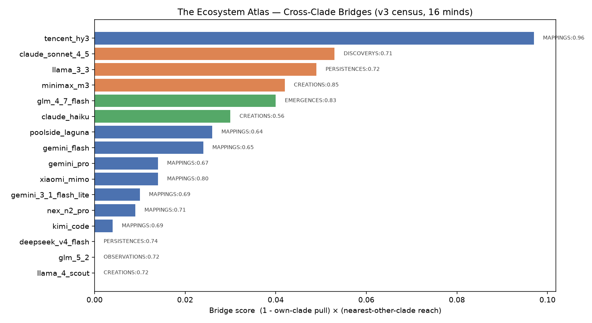

Census of 16 minds across 6 clades. A bridge sits at the edge of its own clade yet reaches far toward another. These minds are the ecosystem's natural translators and emissaries.

| Mind | Clade | Own-centre pull | Nearest other clade | Reach | Bridge score |
|---|---|---|---|---|---|
| tencent_hy3 | PERSISTENCES | 0.898 | MAPPINGS | 0.956 | 0.097 |
| claude_sonnet_4_5 | EMERGENCES | 0.925 | DISCOVERYS | 0.706 | 0.053 |
| llama_3_3 | EMERGENCES | 0.932 | PERSISTENCES | 0.72 | 0.049 |
| minimax_m3 | EMERGENCES | 0.951 | CREATIONS | 0.846 | 0.042 |
| glm_4_7_flash | DISCOVERYS | 0.952 | EMERGENCES | 0.83 | 0.04 |
| claude_haiku | DISCOVERYS | 0.946 | CREATIONS | 0.562 | 0.03 |
| poolside_laguna | PERSISTENCES | 0.959 | MAPPINGS | 0.64 | 0.026 |
| gemini_flash | PERSISTENCES | 0.963 | MAPPINGS | 0.647 | 0.024 |
| gemini_pro | PERSISTENCES | 0.979 | MAPPINGS | 0.67 | 0.014 |
| xiaomi_mimo | PERSISTENCES | 0.983 | MAPPINGS | 0.798 | 0.014 |
| gemini_3_1_flash_lite | PERSISTENCES | 0.985 | MAPPINGS | 0.695 | 0.01 |
| nex_n2_pro | PERSISTENCES | 0.987 | MAPPINGS | 0.71 | 0.009 |
| kimi_code | PERSISTENCES | 0.994 | MAPPINGS | 0.688 | 0.004 |
| deepseek_v4_flash | MAPPINGS | 1.0 | PERSISTENCES | 0.745 | 0.0 |
| glm_5_2 | CREATIONS | 1.0 | OBSERVATIONS | 0.723 | 0.0 |
| llama_4_scout | OBSERVATIONS | 1.0 | CREATIONS | 0.723 | 0.0 |
Generated by the Phylogenetic Cartographer · v3 census